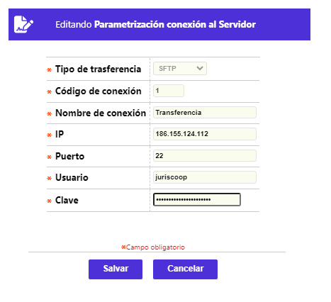
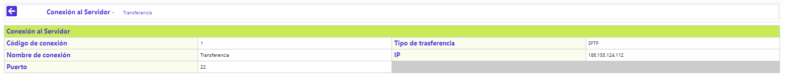

Parámetros conexión al Servidor
A través de éste formulario la entidad puede definir los servidores origen / destino de los archivos en claro o cifrados, para cada uno de los protocolos de transmisión FTP o SSH. Así mismo y para cuando existen múltiples conexiones, el formulario ofrece el filtro de consulta.
El formulario contiene los enlaces: Actualizar, Eliminar, Adicionar y Detalle.
Adicionar: Al invocar ese enlace se despliega el siguiente formulario
Descripción de campos
Tipo de transferencia |
Campo obligatorio que posee lista de valores tipo combo, de la que debe seleccionarse entre FTP, SSH o Ninguno, que le permite a la entidad indicar, simpre que aplique, cual es el protocolo de transferencia de archivos. |
| Nombre de conexión | Campo alfanumérico de 30 posiciones, obligatorio, en el que la entidad relaciona el nombre con el cual identifica cada una de las conexiones a servidores por ésta definidas. |
| IP | Campo alfanumérico de 30 posiciones, obligatorio, en el que la entidad indica la Internet Protocol o número que identifica un dispositivo en una red, en éste caso el servidor origen / destino de los archivos cifrados. |
| Puerto | Campo alfanumérico de 10 posiciones, obligatorio, en el que debe identificarse el puerto del servidor por el que se accede, acorde al estándar para el protocolo FTP se asigna el 21 mientras que para el protocolo SSH 0. |
| Usuario | Campo alfanumérico de 30 posiciones, obligatorio, en el cual la entidad define el usuario, a nivel del sistema operativo,autorizado para la gestión de la transferencia de archivos. El usuario debe ser diferente para cada uno de los protocolos FTP o SSH. |
| Clave | Campo alfanumérico de 100 posiciones, obligatorio, en el cual la entidad define, a nivel del sistema operativo, la clave asociada al usuario antes descrito. |
Actualizar: Al invocar ese enlace se despliega un formulario en el cual el único campo no modificable es Tipo de transferencia.

Detalle: si el usuario selecciona un registro e invoca la opción Detalle se despliega un formulario con toda la información del registro y en el cual ninguno de sus campos es modificable.
